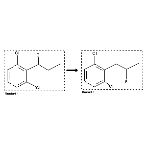

|  |
| FA | RX(1); FLST(1); RX(1) |
Reaction (1 of 1)
| Reaction ID | 4202999 |
| Reactant BRN | 7261516 |
| Reactant | 1-(2,6-dichloro-phenyl)-propan-1-ol |
| Product BRN | 7261518 |
| Product | 1,3-dichloro-2-(2-fluoro-propyl)-benzene |
| No. of Reaction Details | 1 |
Reaction Details (1 of 1)
| Reaction Classification | Preparation |
| Reagent | HF, pyridine |
| Solvent | diethyl ether |
| Time | 24 hour(s) |
| Comment | Yield given |
| Citation Pointer | 5964304; Journal; Dahbi, Abderrahman; Hamman, Sylvain; Beguin, Claude G.; JRMPDM; J.Chem.Res.Miniprint; FR; 5; 1989; 1056-1067; |
Reference (1 of 1)
| Citation Number | 5964304 |
| Document Type | Journal |
| Authors | Dahbi, Abderrahman; Hamman, Sylvain; Beguin, Claude G. |
| CODEN | JRMPDM |
| Journal Title | J.Chem.Res.Miniprint |
| Language Code | FR |
| Number | 5 |
| Publication Year | 1989 |
| Page | 1056-1067 |